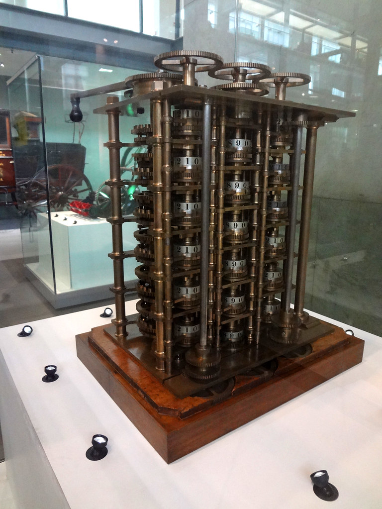
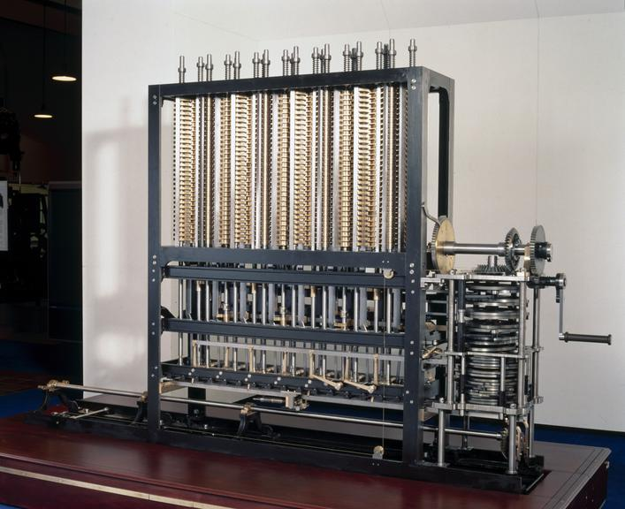

| Project |
Description |
Features |
People |
Picture |
| The Difference Engine |
Charles Babbage started designing the Difference Engine in 1821. The machine was supposed to calculate polinomial functions with high accuracy and speed. The machine had sixteen digits and six orders of difference. In total the Difference Engine had 25000 parts for calculating and printing. Unfortunately it was never completed. |
Can calculate Logarithmic, Trigonometric and Polinomial functions |
Charles Babbage and Johann Helfrich von Müller |
 |
| Analytical Engine |
Charles Babbage started designing the Analyitical Engine in 1834 after realising it can be a better machine than the Difference engine. The Analytical Engine had a part called "Store" which correspond to "RAM" in modern computing and another part called "Mill" which correspond to "CPU" in modern computing. |
Does have looping(iteration), microprogramming, parallel processing and latching functions. And does have fetch-decode-execute cycle just like modern computers. It was also turing complete just like modern computers. |
Charles Babbage and Ada Lovelace |
 |
| Difference Engine 2 |
Charles Babbage started designing Difference Engine Number 2 in 1847 after realising Analytical Engine can be improved. According to design this machine will have 8000 different parts, it will be 4 meters tall and 2.5 meters width. |
Can tabulate all polinomials up to seventh order. Does have all the features of analytical engine since it shares a similar structure to Analytical Engine. |
Charles Babbage and Doron Swade |
 |